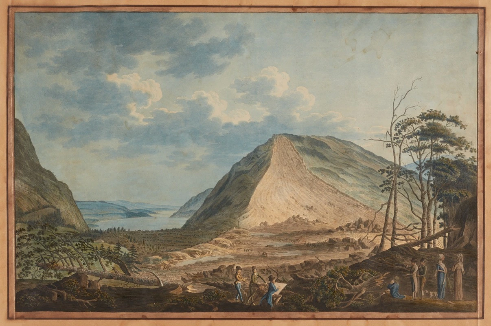
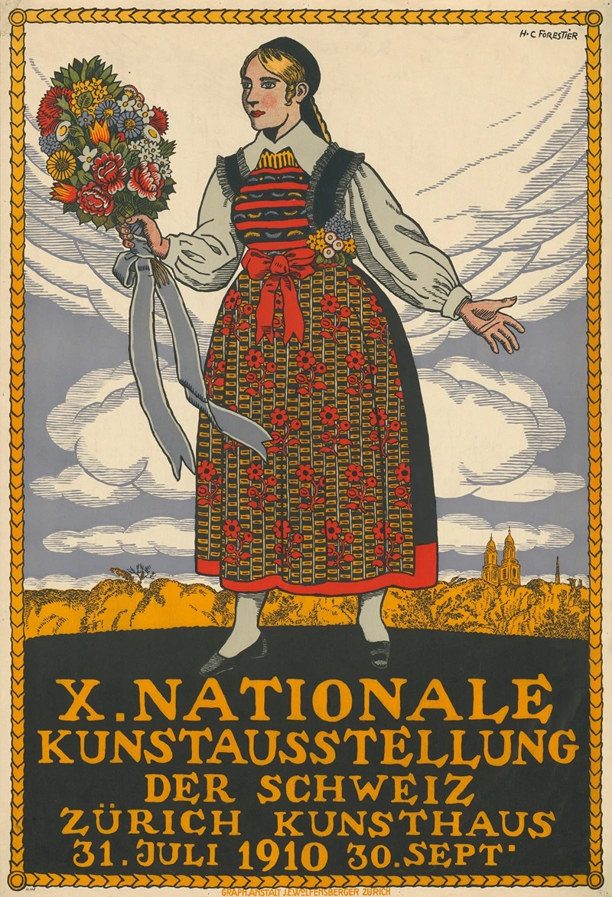
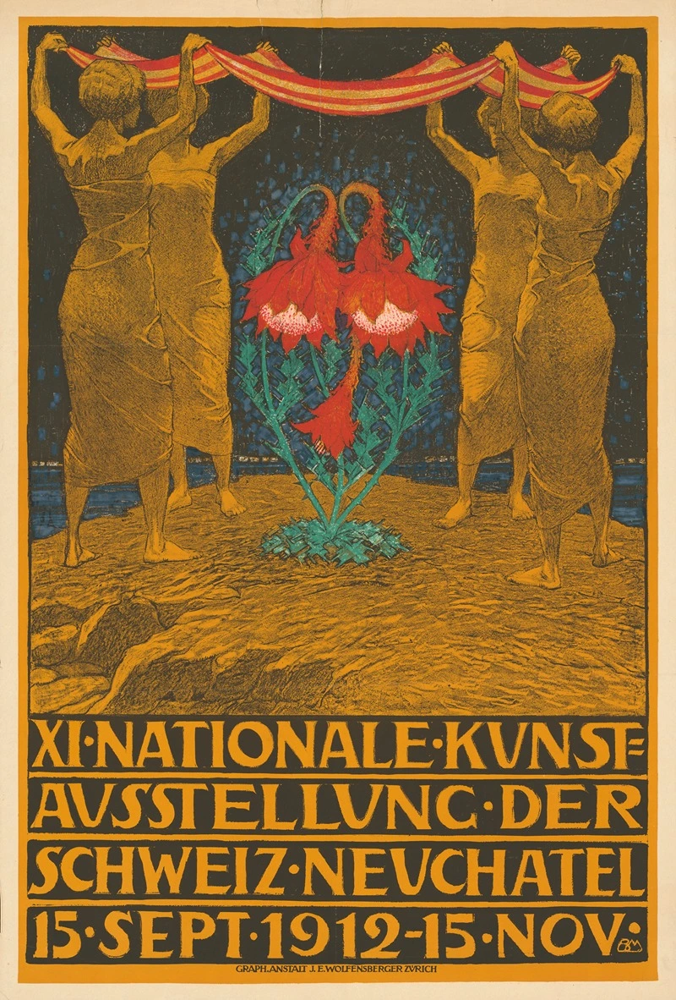
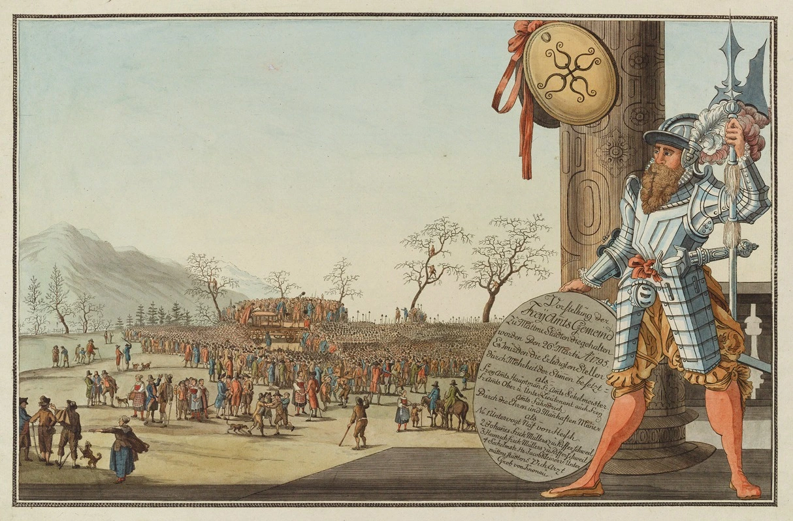
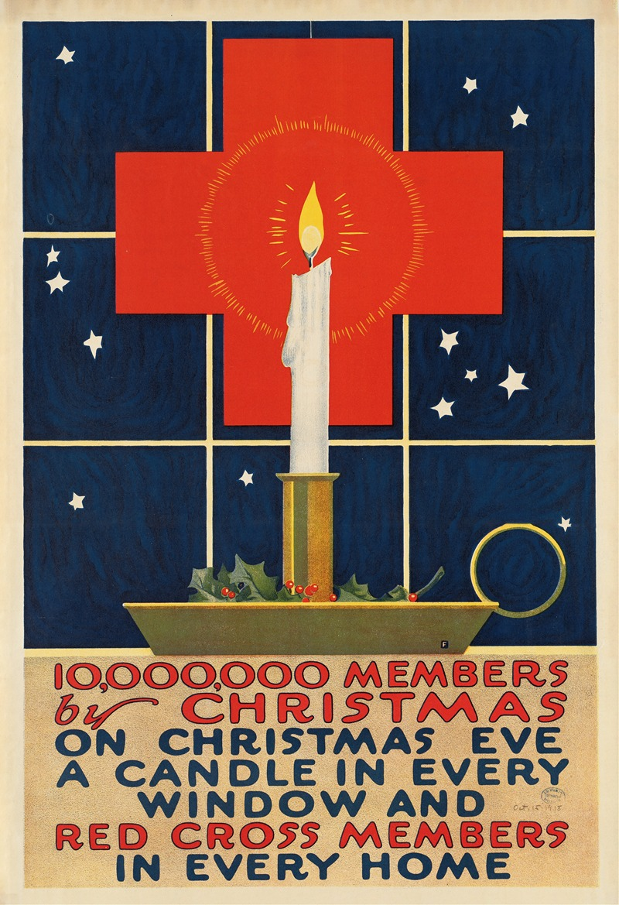

År 1924 skapade den schweiziske konstnären Augusto Giacometti en banbrytande affisch för det rätiska järnvägsnätet, Rhätische Bahn, i kantonen Graubünden. Verket markerar en viktig punkt där den moderna konsten möter turistnäringen, då Giacometti valde ett dristigt och nästan abstrakt uttryck istället för en traditionell avbildning av tåg eller berg. Genom att fokusera på en stiliserad sol och ett intensivt färgspel i lila, gult och orange, lyckades han förmedla den dramatiska atmosfären och det speciella ljuset i de schweiziska Alperna snarare än att bara visa upp en specifik plats.Augusto Giacometti, som var en mästare på kolorism och en av de tidiga pionjärerna inom abstraktionen, använde här sin karakteristiska stil för att sälja en upplevelse av modernitet och framtidstro. Affischen kom att representera den nya tidens resande, där de rätiska järnvägarna öppnade upp de tidigare svåråtkomliga dalarna för den internationella turismen. Idag betraktas affischen från 1924 som ett av de främsta exemplen på grafisk design från mellankrigstiden och finns representerad i betydande samlingar, däribland på Museum of Modern Art (MoMA) i New York, som ett bevis på dess konstnärliga och historiska värde.
Inför den elfte nationella konstutställningen i Schweiz, som hölls i Neuchâtel 1912, skapade konstnären och grafikern Burkhard Mangold en av tidens mest karaktäristiska utställningsaffischer. Mangold, som var en central gestalt inom schweizisk affischkonst och glasmålning, kombinerade här jugendstilens elegans med en begynnande modernism. Affischen visar en stiliserad kvinnofigur i profil mot en bakgrund av Neuchâtelsjöns blå vatten och de omgivande bergen, vilket skapade en visuell koppling mellan den samtida konsten och det schweiziska landskapet.Verket är ett utmärkt exempel på Mangolds förmåga att använda stora, rena färgfält och tydliga konturer för att fånga betraktarens blick, en teknik han förfinat genom sitt arbete med monumentalkonst. Genom att placera den nationella konstutställningen i en så dekorativ och modern inramning bidrog Mangold till att höja affischens status från enkel reklam till ett självständigt konstverk. Idag ses affären från 1912 som ett viktigt dokument över schweiziskt kulturliv under det tidiga 1900-talet, då landet sökte förena sina regionala traditioner med den internationella konstscenens nya strömningar.

Denna dramatiska etsning av den schweiziske konstnären Johann Jakob Aschmann skildrar en av de största naturkatastroferna i schweizisk historia: det massiva jordskredet i Goldau år 1806. Aschmann, som var känd för sina topografiska vyer och noggranna detaljåtergivning, fångade här ögonblicket då enorma massor av sten och jord begravde hela byar i kantonen Schwyz. Genom att dokumentera de förödande effekterna av raset blev verket en viktig del av den tidiga nyhetsrapporteringen, där bildkonsten användes för att sprida kännedom om händelsens omfattning till en skakad allmänhet.I sitt verk kombinerar Aschmann det dokumentära med det sublima, där de krossade husen och de kaotiska stenmassorna kontrasteras mot det omgivande, oberörda bergslandskapet.
Detta verk av Johann Jakob Aschmann dokumenterar en historisk händelse den 26 mars 1795, då församlingen i Mettmenstetten samlades för att diskutera de politiska spänningarna i det så kallade "Freiamt". Aschmann, som var en flitig skildrare av det schweiziska folklivet och lokala miljöer, fångade här en tid präglad av omvälvningar i kölvattnet av den franska revolutionen. Genom att avbilda den offentliga sammankomsten ger han oss en unik inblick i den tidens direktdemokrati och det sociala livet på den schweiziska landsbygden vid slutet av 1700-talet.I bilden ser man hur invånarna samlas utomhus, omgivna av de karakteristiska korsvirkeshusen, för att rådslå om gemensamma angelägenheter och försvara sina lokala friheter. Aschmanns noggrannhet i detaljer, från klädedräkter till byggnadernas arkitektur, gör verket till en värdefull kulturhistorisk källa som visar hur politiskt engagemang tog sig uttryck i vardagen före bildandet av den moderna schweiziska förbundsstaten. Det är en skildring där det lokala självstyret står i centrum, dokumenterat med den saklighet och respekt för motivet som utmärkte Aschmanns konstnärskap.

Inför den tionde nationella konstutställningen i Schweiz, som ägde rum i Genève 1910, skapade konstnären Henri-Claude Forestier en av periodens mest ikoniska affischer. Forestier, som var en framstående målare och illustratör från Genève, valde ett motiv som kombinerade klassisk estetik med en modern, grafisk skärpa. Affischen föreställer en kraftfull mansfigur som med en mejsel i handen personifierar den konstnärliga skaparkraften, vilket gav utställningen en heroisk och tidlös karaktär.Verket är ett tydligt exempel på Forestiers förmåga att arbeta med starka konturer och en begränsad men effektfull färgskala, vilket gjorde att affischen syntes väl i det urbana stadsrummet. Genom att fokusera på konstnären som hantverkare betonade han utställningens syfte att lyfta fram kvaliteten och bredden i den samtida schweiziska konsten. Idag räknas Forestiers bidrag från 1910 som ett centralt verk inom schweizisk affischhistoria, där det markerar övergången från det dekorativa sena 1800-talet till en mer stram och kommunikativ funktionalism.
Under slutet av första världskriget år 1918 skapade den amerikanske illustratören Charles Buckles Falls en kraftfull kampanjaffisch för Amerikanska Röda Korset med målet att nå tio miljoner medlemmar före årets slut. Affischen, som bar devisen att ett tänt ljus skulle finnas i varje fönster och en rödakorsmedlem i varje hem på julafton, spelade på starka känslor av gemenskap, hopp och patriotism under en tid präglad av både krig och den pågående spanska sjukan. Genom att använda det tända ljuset som en symbol för värme och vaksamhet lyckades Falls transformera en humanitär medlemsvärvning till en nationell moralisk plikt.Charles Buckles Falls, som var en mästare på att använda stora färgfält och tydliga svarta konturer influerade av träsnittsteknik, gav motivet en omedelbar visuell genomslagskraft som fungerade perfekt i det offentliga rummet. Hans förmåga att kombinera enkla men djupt rotade symboler med ett tydligt budskap bidrog till att Röda Korsets kampanj blev en av de mest framgångsrika i organisationens historia. Verket står idag som ett betydelsefullt exempel på hur amerikansk affischkonst användes för att mobilisera hemmafronten och skapa en känsla av enighet mitt i en global kris.